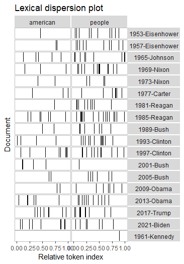

assign03
Assignment 3: Quantenda
In this assignment we were asked to analyze Biden-Xi summit that took place in November 2021. During this summit, Biden and Xi discussed China’s domestic policies, trade relationships, and security issues regarding the Asian region (Politico). For this assignment, we used the R alongside a Quantenda package to scrape and analyze Twitter data on the day of the summit. The twitter data analyzed displayed activity ranging from interactions, trending hashtags, popular users that were tagged, and p
rominent rhetoric on the day of the summit.
This is the summary of data:
The most popular hashtags on that were” #china”,” #joebiden”,” #xinjinping”, and “#america”. Other popular hashtags were “#usa,” “#breakingnews,” and “pray4america.” Quantenda data also pulled other popular hashtags from twitters among the ones not notes above are: “#uyghurgenocide,” “#uyghur,” “#humanrights,” “tibetans,” “taiwan,” “#coronavirus,” and interestingly enough “#fentanyl.” This plot shows how the variety of hashtags were used, and their connection with one another.

The Quantenda data allowed us to look at the 20 top users that were featured on the data matrix. The five top users mentioned were @POTUS, @JoeBiden, @Politico @EnesKanter, and @jendeben. The accompanying plot displays the interaction between various twitter users.
-03.png)

Another data point was analyzing lexical dispersion of US Presidents from 1953 to 2021. This plot ranged from 1953 when president Eisenhower was in office to current president Joe Biden. There is a lexical dispersion plot aimed to account for the frequency of times that presidents have used the term ‘american,’ in their speeches. In the plots this accounted for by referring to the term ‘relative token index.’ There is a wide variation of frequency among the US presidents, but according to the plot the use of the term does seem to slight increase around 1993 when Clinton was in office.

The second part of the lexical dispersion plot was comparing the frequencies between the words “american,” and “people.” The word “people,” showed less variation among presidents and was used quite frequently among all of them.

Lastly, we were asked to discuss Wordfish it. Wordfish analyzes positions of documents based on word frequencies. They do so by using a one-dimension scaling model.